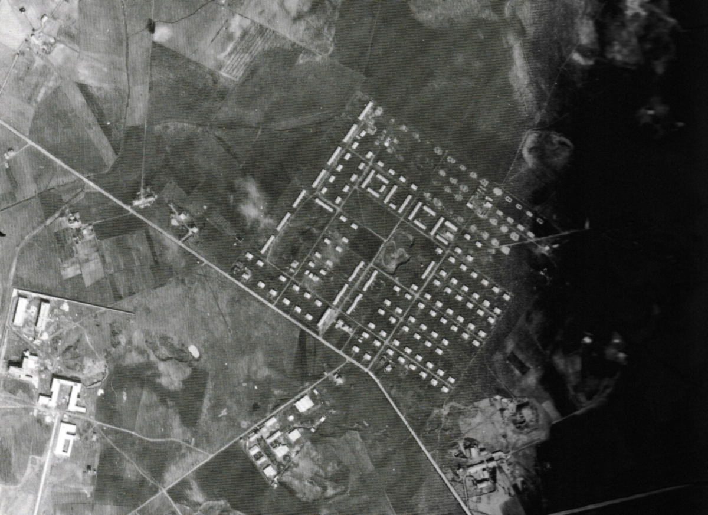
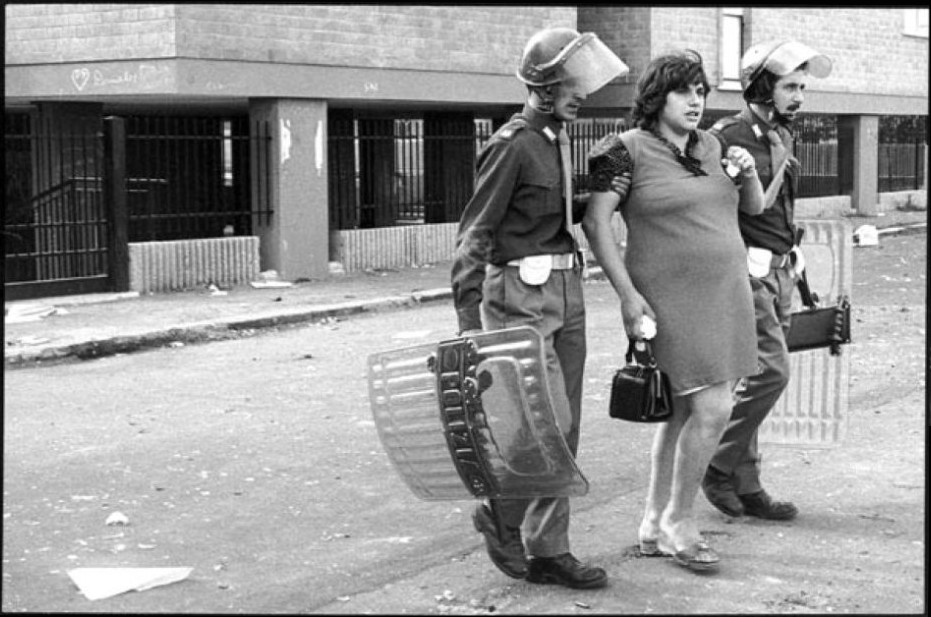
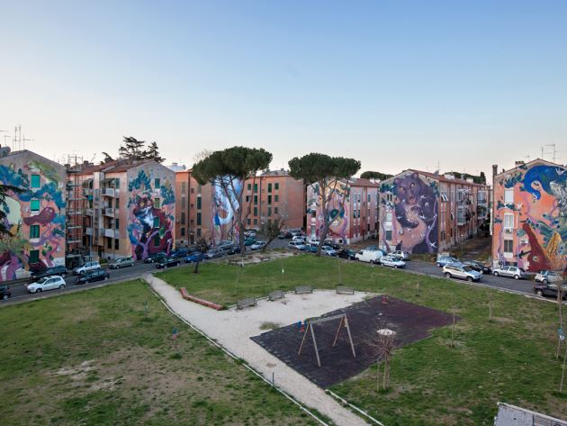

San Basilio
Cos’è e dove si trova
 San Basilio (in giallo nella cartina) è uno dei trentacinque quartieri di Roma e fa parte della zona urbanistica 5E del Municipio Roma IV di Roma Capitale. Si trova nell'area nord-est della città, a ridosso del Grande Raccordo Anulare.
San Basilio (in giallo nella cartina) è uno dei trentacinque quartieri di Roma e fa parte della zona urbanistica 5E del Municipio Roma IV di Roma Capitale. Si trova nell'area nord-est della città, a ridosso del Grande Raccordo Anulare.
Il quartiere confina con le cosiddette zone romane: a nord con la zona "Z. IV Casal Boccone", a est con la zona "Z. VI Settecamini", a sud con la zona "Z. VII Tor Cervara" e ad ovest, infine, con il quartiere "Q. XXIX Ponte Mammolo".
La sua storia
Anni '30

Nella borgata di San Basilio, come d’altronde in tutte quelle realizzate prima della metá degli anni Trenta, le case erano vere e proprie capanne in muratura ad un solo piano.
I servizi igienici, cosí come le fontane, che dovevano essere utilizzate anche come lavatoi, erano sparse nella borgata e dovevano servire a un determinato numero di abitazioni.
Le "casette" realizzate in carpilite, erano disposte in modo che da una visuale aerea si leggesse la scritta "duce".
Dopoguerra
Dopo la Seconda Guerra Mondiale ebbe un nuovo sviluppo grazie ai particolari edifici (che erano definiti di carattere intensivo in quanto sfruttavano al massimo la superficie disponibile) della UNRRA, organizzazione umanitaria del famoso piano di aiuti Marshall.
Anni '50
Negli anni cinquanta vennero frazionati i terreni posseduti da Elena Tidei, dando così vita alla Borgatella Tidei -costruita da migranti giunti prevalentemente dalle Marche- raggiungibile da quattro strade sterrate. Le sei vie strette interne furono acquisite e urbanizzate da parte del Comune di Roma solo nel 2004.
A partire dal 1954 la borgata di San Basilio realizzata dal fascismo venne demolita per consentire allo IACP (Istituto Autonomo Case Popolari) di costruire edifici di maggiore altezza e strutturalmente più stabili.
Anni '60
Nel 1960, in seguito alle provvidenze statali stanziate in occasione dei giochi olimpici, furono assegnati dallo IACP altri appartamenti ai baraccati di varie zone di Roma. Le nuove costruzioni, realizzate a San Basilio, sembravano essere certamente le piú funzionali del quartiere.
Contemporaneamente al risanamento della borgata degli anni Cinquanta, anche San Basilio cominció a funzionare da centro per l’urbanizzazione da parte dei privati speculatori delle aree circostanti, valorizzate dai servizi che la borgata vi aveva fatto arrivare. Sorsero cosí altre borgate su lottizzazioni abusive, veri e propri agglomerati spontanei, al di fuori da ogni pianificazione urbanistica.
Tuttavia la creazione dei nuovi insediamenti pose al Comune il problema di rendervi la vita possibile. Non esistevano, infatti, nè strade, nè fogne, nè scuole. Quasi tutti gli interventi urbanistici venivano attuati al di fuori di qualsiasi pianificazione generale.
Anni '70

Nel 1974 il quartiere è il teatro di scontri tra la polizia e famiglie che avevano occupato oltre cento abitazioni "popolari" in via Montecarotto e via Fabriano.
Nel corso di tali episodi di violenza, noti come "rivolta di San Basilio", diversi agenti e residenti vengono feriti. Durante gli scontri un giovane di 19 anni, di nome Fabrizio Ceruso, rimane ucciso. Nel 2014, all'interno del progetto "SanBa", gli venne dedicato uno dei murales che contraddistinguono il quartiere.
Dopo questo evento, viene avviata una mediazione per l'assegnazione degli alloggi e, il 9 settembre 1974, il Consiglio della Regione Lazio vara una legge, nella quale si afferma che le famiglie che avessero occupato un alloggio nel territorio laziale, per autentico bisogno e prima dell'8 settembre di quell'anno, avevano diritto all'assegnazione di un appartamento.
San Basilio oggi
Oggi San Basilio si presenta come un quartiere popolare periferico costituito da un grande "centro storico" IACP, che ospita circa quattromila famiglie, e da una zona "periferica" dove vivono circa millecinquecento famiglie.
Negli ultimi anni è diminuito decisamente l’indice di affollamento. La quasi totalitá delle giovani famiglie di San Basilio va a cercare casa fuori del quartiere poiché le abitazioni sono quasi tutte dello IACP. Pertanto San Basilio invecchia progressivamente. I servizi circoscrizionali agli anziani di San Basilio sono coordinati da assistenti sociali e da una cooperativa di giovani che pratica servizi a domicilio.
SANBA by WALLS
Nel 2014 e nel 2015, peró, le due edizioni del progetto di arte pubblica di quartiere "SanBa", ideato e curato da Walls per ridare vita e colori ad un quartiere fortemente degradato e periferico ma anche per "sperimentare l’interconessione tra arte contemporanea e complessità sociale nei quartieri periferici", riesce veramente bene nel suo intento e rende molto piú piacevole il primo impatto che si ha con la piazza principale del borgo.

La metodologia di intervento consolidata da WALLS si esprime attraverso due momenti distinti ma interconnessi: in un primo momento una fase di workshop di alfabettizzazione all’arte e di comprensione del ruolo dell’arte pubblica nella riqualificazione urbana nelle scuole e, in un secondo momento, una serie d'interventi di arte pubblica sulle facciate del quartiere, che siano memento dell’esperienza vissuta e dei cambiamenti promossi.
Infatti, in un primo momento, i bambini dell’I.C. Mahatma Gandhi hanno dunque immaginato il nuovo volto del quartiere con il collettivo WorkIn Project e visto proiettate sulle facciate (che sarebbero poi state protagoniste dell’intervento di Liqen e Agostino Jacurci nel 2014 e di Hitnes nel 2015) i disegni che avrebbero voluto vedere sui muri del quartiere.
Le serate finali delle due edizioni del progetto artistico sono state un mix di arte e spettacolo di ogni genere, tra cui la musica, nel quartiere in cui sono nati e cresciuti artisti del calibro di Fabrizio Moro, Ultimo e Mannarino.
La musica come strumento di integrazione
Dalle difficoltá di un quartiere periferico come San Basilio si puó emergere in vari modi: comporre musica e canzoni è sicuramente uno dei piú classici ma anche uno dei piú diretti e impulsivi.
Tra i tanti musicisti che hanno avuto successo dopo aver sconfitto difficoltá di questo genere, ce ne sono tre (quattro, anche se il quarto fa parte di un gruppo) che vengono proprio da San Basilio: come giá detto, sono i tre cantautori Fabrizio Moro, Ultimo e Mannarino.
Insieme al cantante de I cugini di campagna Ivano Michetti (anche lui originario del posto), sono protagonisti della puntata “La realtà di San Basilio” di Eroi di strada in cui la giornalista Ilenia Pietracalvina li intervista all’interno del quartiere chiedendo loro alcuni accenni alle proprie storie e quanto siano effettivamente legati a San Basilio.